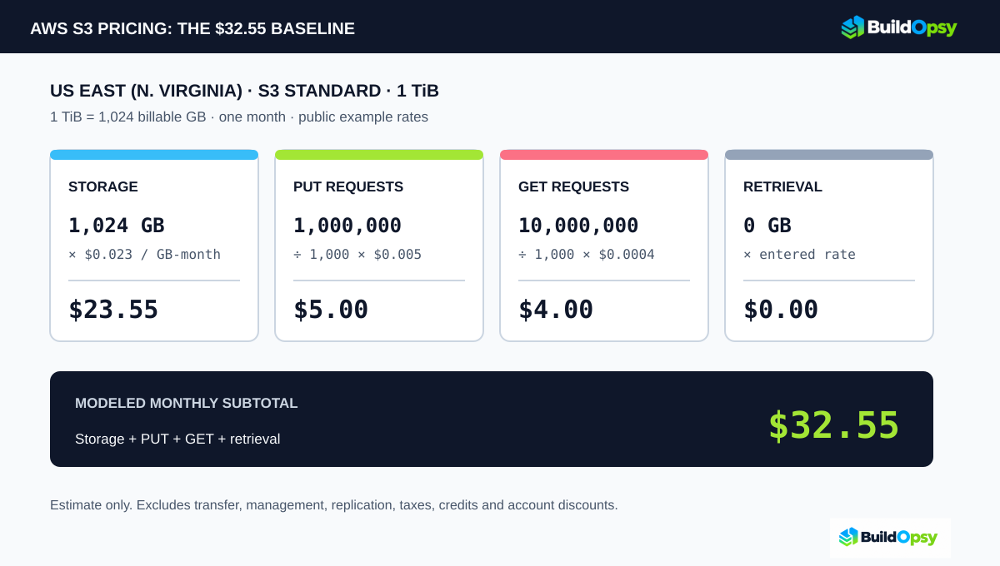
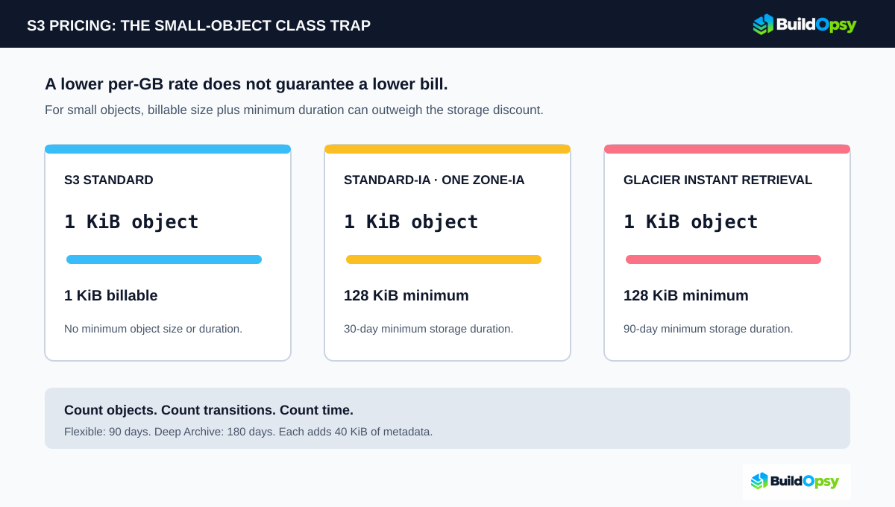

S3 Rates at a Glance
Every rate in the first two tables is a US East (N. Virginia) list price from the AWS price list snapshot published October 15, 2026; the Deep Archive row comes from the separate list noted at the end of this section, and the four-Region table uses each Region's own index at the same version. The worked model in this article uses S3 Standard. The other classes matter because the storage rate alone misleads: Glacier Instant Retrieval stores at 17% of the Standard rate ($0.004 ÷ $0.023) and then charges $0.03 for every gigabyte read back.
Storage: the eight classes AWS prices on the S3 page
| Storage class | Storage per GB-month | Retrieval per GB | Object-size rule | Minimum duration |
|---|---|---|---|---|
| S3 Standard | $0.023 first 50 TB; $0.022 next 450 TB; $0.021 above 500 TB | None | None | None |
| S3 Intelligent-Tiering | $0.023 / $0.022 / $0.021 Frequent Access; $0.0125 Infrequent Access; $0.004 Archive Instant Access; $0.0036 Archive Access; $0.00099 Deep Archive Access | None for standard and bulk; expedited from Archive Access bills at the expedited rate | None; objects under 128 KiB stay in Frequent Access and are not monitored | None |
| S3 Standard-IA | $0.0125 | $0.01 | 128 KiB minimum billable | 30 days |
| S3 One Zone-IA | $0.01 | $0.01 | 128 KiB minimum billable | 30 days |
| S3 Glacier Instant Retrieval | $0.004 | $0.03 | 128 KiB minimum billable | 90 days |
| S3 Glacier Flexible Retrieval | $0.0036 | $0.01 standard; $0.03 expedited; bulk free | 40 KiB overhead per object | 90 days |
| S3 Glacier Deep Archive | $0.00099 | $0.02 standard; $0.0025 bulk | 40 KiB overhead per object | 180 days |
| S3 Express One Zone | $0.11 | $0.0006 | None | None |
Intelligent-Tiering bills a separate monitoring and automation charge of $0.0025 per 1,000 objects per month. Among the classes in this table, Express One Zone is the only one priced above Standard per stored GB, at 4.8 times the first-tier rate ($0.11 ÷ $0.023). Three per-GB meters sit outside the table. Reduced Redundancy is still listed in the same price list at $0.024 for the first TB and above Standard at every tier, and AWS's storage-class documentation marks it not recommended, so it is excluded here rather than ranked. S3 Vectors and S3 Files appear on the same pricing page as separate products with their own meters, not as storage classes.
Requests: the price moves with the class
A PUT into Standard and a PUT into Glacier Instant Retrieval are not the same meter. The per-request rate changes by class, and for the archive classes the write path changes too.
| Storage class | PUT, COPY, POST per 1,000 | GET and all other requests per 1,000 |
|---|---|---|
| S3 Standard | $0.005 | $0.0004 |
| S3 Intelligent-Tiering | $0.005 | $0.0004 |
| S3 Standard-IA | $0.01 | $0.001 |
| S3 One Zone-IA | $0.01 | $0.001 |
| S3 Glacier Instant Retrieval | $0.02 | $0.01 |
| S3 Glacier Flexible Retrieval | $0.03 | $0.0004 |
| S3 Glacier Deep Archive | $0.05, the same rate as a lifecycle transition in | $0.0004 |
| S3 Express One Zone | $0.00113 | $0.00003 |
LIST requests are the exception: AWS charges them at the S3 Standard PUT rate on every class, so a LIST costs $0.005 per 1,000 even where a PUT costs $0.02 or $0.03. On the write meters the spread is wide enough to change a design. A PUT costs 4 times more in Glacier Instant Retrieval than in Standard ($0.02 ÷ $0.005) and a GET costs 25 times more ($0.01 ÷ $0.0004). Express One Zone inverts it: its requests are cheaper than Standard's by 4.4 times for writes and 13.3 times for reads, which is why the $0.11 storage rate is not the whole comparison. Multipart upload parts to Glacier Flexible Retrieval bill at $0.005 per 1,000, separate from the $0.03 per 1,000 object-level writes, and Deep Archive parts bill at $0.005 per 1,000 against its $0.05 object-level write.
How the rate moves across four Regions
All four Regions below are published under the same price list version, so this is a like-for-like comparison rather than a snapshot mismatch.
| Region | Standard first 50 TB | Standard 50–500 TB | Standard above 500 TB | Standard-IA | Glacier Instant Retrieval |
|---|---|---|---|---|---|
US East (N. Virginia), us-east-1 | $0.023 | $0.022 | $0.021 | $0.0125 | $0.004 |
US West (Oregon), us-west-2 | $0.023 | $0.022 | $0.021 | $0.0125 | $0.004 |
Europe (Ireland), eu-west-1 | $0.023 | $0.022 | $0.021 | $0.0125 | $0.004 |
Asia Pacific (Mumbai), ap-south-1 | $0.025 | $0.024 | $0.023 | $0.0138 | $0.005 |
Moving the same bucket from US East to Mumbai raises the first-tier Standard rate by 8.7% ($0.025 ÷ $0.023 = 1.087), Standard-IA by 10.4% ($0.0138 ÷ $0.0125 = 1.104) and Glacier Instant Retrieval by 25% ($0.005 ÷ $0.004 = 1.25). Request prices for these three classes are identical in all four Regions: $0.005 and $0.0004 per 1,000 for Standard, $0.01 and $0.001 for Standard-IA, $0.02 and $0.01 for Glacier Instant Retrieval. The colder request meters are not identical. A Glacier Flexible Retrieval PUT is $0.03 per 1,000 in US East and US West, $0.033 in Ireland and $0.036 in Mumbai, and a Deep Archive lifecycle transition is $0.05, $0.055 and $0.07 per 1,000 in the same order. So the storage rate is the only Regional difference among the three classes in this table, not across every S3 meter. Four Regions are a sample, not a rule; check the price list for the Region you deploy in.
At these rates, 1,024 billable GB for a full month and 1 million PUTs and 10 million GETs is $23.55 + $5.00 + $4.00 = $32.55 before retrieval and transfer. Run your own inputs in the S3 calculator. Compute meters behave differently: the EC2 pricing and billing teardown prices the 60-second floor, idle Elastic IPs and capacity reservations that sit outside an instance-hour.
What the free tier actually covers
The shape of this changed in 2025. AWS's S3 pricing page states that, as of July 15, 2025, new AWS customers receive up to $200 in AWS Free Tier credits applicable to eligible services including Amazon S3, and that all Free Tier credits must be used within 12 months of account creation. The Free plan itself runs for six months: AWS's Free Tier page says the account closes six months after it is opened, or when the credits run out, whichever comes first. Either way it is a credit balance rather than a permanent monthly storage and request allowance, so a bucket does not reset to free each month once the credits are spent.
The one standing allowance is on transfer: 100 GB per month of data transfer out to the internet, which AWS aggregates across all AWS services and Regions except China and GovCloud. Storage, requests and retrieval are billed at the rates above from the first byte; the transfer allowance does not offset them.
1 TiB storage-only comparison
Using the same US East (N. Virginia) list rates and 1 TiB = 1,024 GiB = 1,024 billable GB, the storage-only monthly charge is:
| Storage class | US East list rate | 1 TiB storage-only |
|---|---|---|
| S3 Standard | $0.023 per GB-month (first 50 TB tier) | $23.55 |
| S3 Standard-IA | $0.0125 per GB-month | $12.80 |
| S3 One Zone-IA | $0.01 per GB-month | $10.24 |
| S3 Glacier Instant Retrieval | $0.004 per GB-month | $4.10 |
| S3 Glacier Flexible Retrieval | $0.0036 per GB-month | $3.69 |
| S3 Glacier Deep Archive | $0.00099 per GB-month | $1.01 |
| S3 Express One Zone | $0.11 per GB-month | $112.64 |
Each result is 1,024 × the listed rate, rounded to cents. Unrounded: $23.552, $12.80, $10.24, $4.096, $3.6864, $1.01376 and $112.64. The Standard row uses the first 50 TB tier, and the Intelligent-Tiering Frequent Access tier is identical at $0.023 and is omitted rather than repeated. The remaining rows use their flat US East storage rates, with Deep Archive from the separate Glacier Deep Archive price list cited below. This is storage only: it excludes requests, retrieval, transfer, minimum-storage-duration charges and additional billable metadata overhead. Actual bills vary by Region, storage class, object size (including the 128 KiB minimum billable size for Standard-IA, One Zone-IA and Glacier Instant Retrieval), lifecycle, access pattern and billing rules. The table ranks storage-only cost, not total workload cost; the cheapest row is not automatically the cheapest workload.
Storage, retrieval and request rates come from the Amazon S3 price list, version 20261015173540, published October 15, 2026 at 17:35:40Z, re-checked October 28, 2026. The Deep Archive storage rate comes from the separate Amazon S3 Glacier Deep Archive price list, version 20260911124507, published September 11, 2026. The regional table uses the same S3 version for us-west-2, eu-west-1 and ap-south-1, all of which are published at 20261015173540, so the four columns share one snapshot date. Object-size rules, minimum storage durations, the Intelligent-Tiering monitoring charge, the LIST pricing rule and the 100 GB transfer allowance follow AWS's S3 pricing page as read on October 28, 2026; the Free plan window follows the AWS Free Tier page read the same day. Egress tiers come from the AWSDataTransfer price list, version 20260916132208, published September 16, 2026, and are summarized in the linked teardown. List prices exclude tax, credits and negotiated discounts, and vary by Region and volume.

1. The Storage Rate Is Not the Bill
S3 pricing is a sum of usage meters. AWS lists storage, requests, retrieval, transfer, management, replication, and transform and query features as separate cost components. The right question is not “What does a gigabyte cost?” It is “How many billable bytes, operations and transfers does this workload create in each class?”
The model below uses a general-purpose bucket in S3 Standard in US East (N. Virginia). Its storage input is 1 TiB, or 1,024 billable GB. The example rate is $0.023 per billable GB-month in the first 50 TB tier. Public AWS prices vary by Region, class and volume. The rate is an input, not a permanent constant.
2. Rebuild the $32.55 Worked Model
The existing S3 pricing calculator starts with stored volume, PUT count, GET count and retrieval. At the example rates, the arithmetic is:
| Line item | Calculation | Modeled charge |
|---|---|---|
| S3 Standard storage, first 50 TB tier | 1,024 GB-month × $0.023 | $23.55 |
| PUT requests | 1,000,000 ÷ 1,000 × $0.005 | $5.00 |
| GET requests | 10,000,000 ÷ 1,000 × $0.0004 | $4.00 |
| Class retrieval | 0 GB × entered rate | $0.00 |
| Modeled subtotal | Storage + requests + retrieval | $32.55 |
Storage uses $0.023 per billable GB-month for the first 50 TB volume tier. The request inputs use the tool's editable US East example rates. The example is deliberately 1,024 billable GB, not 1,000 decimal gigabytes. AWS's S3 billing FAQ demonstrates the binary conversion from 4 GB to 4,294,967,296 bytes.
At these inputs, requests contribute $9.00. That is about 28 percent of the subtotal before any data leaves the bucket. Raising GET volume from 10 million to 100 million adds $36.00 at the same example rate. The 1 TiB storage line remains $23.55. Requests now contribute $45.00, almost twice the storage line. This is how a request-heavy workload can outgrow the number everyone quotes per gigabyte.
The model prices request counts, not payload size. One GET of a large object and one GET of a small object are each one request for this line item. Their transfer and storage consequences differ. So does a workload that repeatedly lists millions of keys. Browsing S3 in the console can also create billable GET, LIST and other requests.
3. Object Size Can Reverse the Storage-Class Choice
S3 Standard has no minimum billable object size. Standard-IA and One Zone-IA bill at least 128 KiB per object and impose a 30-day minimum duration. Glacier Instant Retrieval has a 128 KiB minimum and a 90-day minimum. Glacier Flexible Retrieval has a 90-day minimum. Deep Archive has a 180-day minimum. Both archive classes add 40 KiB of metadata per object: 8 KiB billed at S3 Standard rates and 32 KiB billed at the applicable Glacier rate. These details matter when a pipeline creates millions of small records.

For a 1 KiB object in Standard-IA, the 128 KiB floor represents 128 times the payload in billable storage units before the 30-day duration rule. A class can still win when data stays long enough and is read rarely. It can lose when a job writes tiny objects, transitions each one, then deletes or overwrites them early.
Intelligent-Tiering has a different constraint. Objects under 128 KiB are not monitored for automatic tiering and remain in Frequent Access. For Glacier Flexible Retrieval or Deep Archive, each archived object also carries the documented metadata overhead. Count objects and transitions, not only terabytes.
4. A GET Request and a Retrieval Fee Are Different Meters
Every class has request pricing. Some less-frequent and archive classes add per-GB retrieval pricing. Standard-IA, One Zone-IA and Glacier Instant Retrieval charge retrieval when data is read. Intelligent-Tiering has no retrieval fee for its standard and bulk retrieval paths, though its monitoring charge and optional accelerated archive retrieval have separate rules.
Restoring an object from Glacier Flexible Retrieval or Deep Archive is not the same as a normal Standard GET. A restore creates a temporary accessible copy for a chosen period. During that window, storage can be billed for both the archive and the restored Standard copy. The archive still has its minimum-duration rules.
Lifecycle is a request stream too. A rule that moves ten million objects can generate per-object transition requests. If objects are then expired before a class minimum has elapsed, the remaining minimum-duration charge can still apply.
5. Transfer, Versioning and Features Sit Outside the Base
Data transfer is a separate line. AWS lists a first 100 GB per month internet-transfer allowance aggregated across AWS services and Regions, with China and GovCloud exceptions. Same-Region transfers between S3 and AWS services and transfers to CloudFront have stated exceptions. Cross-Region transfer, transfer acceleration and internet egress follow their own pricing. The transfer side gets its own teardown: the $0.09 toll.
This is why the S3 tool leaves transfer out. Use the Cloud Egress Cost Calculator with the applicable billable volume and rate. Do not subtract a free allowance twice if other services in the account already used it.
Versioning changes retention. An overwrite creates a new full object version. The older version stays billable until a noncurrent-version lifecycle rule expires it or a version-specific permanent delete removes it. In a versioned bucket, a current-version expiration rule generally adds a delete marker rather than removing older versions. Cross-Region Replication creates destination storage and request and transfer charges. S3 Inventory, Storage Lens, Object Tagging, Intelligent-Tiering monitoring, S3 Select, S3 Tables and S3 Vectors add distinct cost dimensions. They are outside the $32.55 example.
6. Reconcile the Model With the Bill
Use AWS Cost and Usage Reports for billed cost. S3 usage reports can break activity out by operation, usage type, Region, resource, request count and transfer volume. AWS lets you aggregate its S3 usage report hourly, daily or monthly. That is the bridge from application telemetry to the invoice.
Representative S3 usage types in a bill
These are representative patterns, not a complete or universal mapping. Usage-type labels can vary by Region, storage class, operation and billing configuration. A bucket only incurs the rows its class and usage trigger.
| Usage-type pattern | Charge | Meter to reconcile |
|---|---|---|
TimedStorage-*ByteHrs | Storage usage by storage class | Billable GB-month for the class, including applicable minimum-size rules. Minimum-duration remainders appear under EarlyDelete-*. |
Requests-Tier1 | PUT, COPY, POST and LIST requests | Request count per 1,000 at the class rate; LIST requests use the S3 Standard PUT/COPY/POST rate. |
Requests-Tier2 | GET and other applicable requests | Request count per 1,000; Standard GET has no per-GB retrieval fee, while colder classes can add retrieval. |
Retrieval-SIA / Retrieval-GIR | Standard-IA and Glacier Instant Retrieval retrieval | Retrieved GB at the class rate; does not apply to S3 Standard. |
DataTransfer-Out-Bytes | Internet data transfer out | Billable GB leaving S3, after applicable free allowances and tiers. |
EarlyDelete-* | Minimum-storage-duration charges | Prorated GB-hours when an object leaves a class before its 30-, 90- or 180-day minimum. |
Patterns follow AWS's S3 billing and usage-report documentation. The list is illustrative; use the usage types in your own bill and the rates for your Region and class.
For a data pipeline, retain four separate counters: average billable bytes by storage class, request counts by operation, bytes retrieved from charged classes and bytes transferred by destination. Add object counts for Intelligent-Tiering and archive workloads. Keep lifecycle transitions and retained noncurrent versions visible. A single “bucket size” metric cannot explain every line.
The Buildopsy calculator models storage, PUT requests, GET requests and entered retrieval. It accepts one editable rate for each line, then applies volume tiers, a minimum billable object size and a minimum storage duration in its realism checks when you supply an object count or a retention period. It does not choose a class, inspect an AWS bill, or add transfer. Enter your Region's rates, then model the omitted line items separately. For an account-specific estimate, use the AWS Pricing Calculator.
7. The Verdict: Price the Access Pattern
The storage-class rate is a useful lower bound, not a workload estimate. A small-object archive can pay for unused minimum bytes. A hot bucket can pay more for operations or transfer than for storage. A versioned bucket can retain every overwritten byte until lifecycle rules remove it.
Start with the workload shape: object-size distribution, change rate, reads per object, retrieval volume, retention period and destination. Price each meter against the actual Region and class. Run the first four meters through the S3 calculator, add transfer separately and reconcile the result against CUR line items. The bill hides in the boundary between stored bytes and the work required to use them.
For a disclosed data-lake architecture with an explicit modeled bill, see Notion's 200 Billion Blocks and the Warehouse Bill Behind a Blank Page.
Frequently Asked Questions
How much does 1 TiB of S3 Standard storage cost?
At the modeled example US East first-50-TB rate of $0.023 per billable GB-month, 1,024 billable GB costs $23.55 for a full month of storage. Requests, retrieval, transfer and other charges are extra.
How much does S3 Standard storage cost per GB?
In US East (N. Virginia), S3 Standard lists at $0.023 per GB-month for the first 50 TB, $0.022 for the next 450 TB and $0.021 above 500 TB, per the AWS price list snapshot published October 15, 2026. Request, retrieval and transfer charges are separate.
Is there an S3 free tier?
The current S3 pricing page does not list a per-service monthly storage and request allowance. It states that, as of July 15, 2025, new AWS customers receive up to $200 in AWS Free Tier credits applicable to eligible services including Amazon S3, and that all Free Tier credits must be used within 12 months of account creation. The Free plan itself runs six months. A 100 GB per month data transfer out allowance remains, aggregated across AWS services and Regions except China and GovCloud.
Does S3 pricing change by Region?
Yes, and the storage rate is what moves. US East (N. Virginia), US West (Oregon) and Europe (Ireland) share the same Standard, Standard-IA and Glacier Instant Retrieval rates in the October 15, 2026 price list. Asia Pacific (Mumbai) is 8.7% higher on the first-tier Standard rate at $0.025, 10.4% higher on Standard-IA at $0.0138 and 25% higher on Glacier Instant Retrieval at $0.005. Request prices for those three classes are identical in all four Regions; the Glacier and Deep Archive request meters differ.
Does the Buildopsy S3 calculator include data transfer out?
No. It models storage, entered PUT and GET requests, and entered retrieval. Use the Cloud Egress Cost Calculator separately with the rate and allowance that apply to your account.
Why can a cheaper S3 storage class cost more overall?
Less-frequent classes can add minimum billable object sizes, minimum storage durations, retrieval fees, restore requests or lifecycle transition charges. Compare the expected access and retention pattern, not only the per-GB rate.
How does S3 billing work?
AWS bills separate meters: storage per billable GB-month, requests per thousand PUT/COPY/POST/LIST and GET calls, retrieval or early-deletion charges on colder classes, and data transfer out. Cost and Usage Reports break the charges down by usage type, operation and Region. See the representative S3 usage-type table for the bill-code patterns behind these meters.
How can I estimate my S3 storage cost?
Enter billable gigabytes, monthly PUT and GET counts, and retrieval volume into the S3 cost calculator with your region's rates. Model transfer out separately — it often exceeds storage.
Sources and Method
The rate tables above combine the Amazon S3 price list, version 20261015173540 (published 2026-10-15 at 17:35:40Z, re-checked 2026-10-28), with the separate Amazon S3 Glacier Deep Archive price list, version 20260911124507 (published 2026-09-11), for the Deep Archive row. That S3 snapshot lists S3 Standard storage at $0.023/GB-month for the first 50 TB, PUT/COPY/POST/LIST at $0.005 per 1,000 requests, and GET/other requests at $0.004 per 10,000, equivalent to $0.0004 per 1,000. The same version supplies the per-class request rates, and the four-Region table is built from each Region's own index at that version rather than from a multiplier applied to US East. Free Tier terms and the 100 GB transfer allowance were read from AWS's S3 pricing page and AWS Free Tier page on 2026-10-28. Egress tiers come from the AWSDataTransfer price list, version 20260916132208 (published 2026-09-16), as summarized in the linked teardown. AWS prices vary by Region, class, volume tier and enabled feature. The examples are estimates, not a customer invoice. AWS's live price page and billing documentation control for real budgets.
- AWS: Amazon S3 pricing
- AWS Price List API: Amazon S3, version 20261015173540 for US East (N. Virginia), published 2026-10-15T17:35:40Z
- AWS Price List API: Amazon S3, version 20261015173540 for US West (Oregon)
- AWS Price List API: Amazon S3, version 20261015173540 for Europe (Ireland)
- AWS Price List API: Amazon S3, version 20261015173540 for Asia Pacific (Mumbai)
- AWS: Free Tier terms, including the credit model effective July 15, 2025
- AWS Price List API: Amazon S3 Glacier Deep Archive, version 20260911124507 for US East (N. Virginia), published 2026-09-11T12:45:07Z
- AWS Price List API: AWSDataTransfer, version 20260916132208 for US East (N. Virginia), published 2026-09-16T13:22:08Z
- DevZero: US East rates fetched from the AWS Price List API (updated September 28, 2026)
- AWS: S3 billing FAQ and binary storage-unit example
- AWS: Billing reports for Amazon S3
- AWS: Usage reports for Amazon S3
- AWS: Understanding your AWS billing and usage reports for Amazon S3
- Buildopsy: CDN egress pricing — the transfer side of the same bill
- AWS: Understanding S3 storage classes
- AWS: How S3 Versioning works
- AWS: Minimum storage duration charges